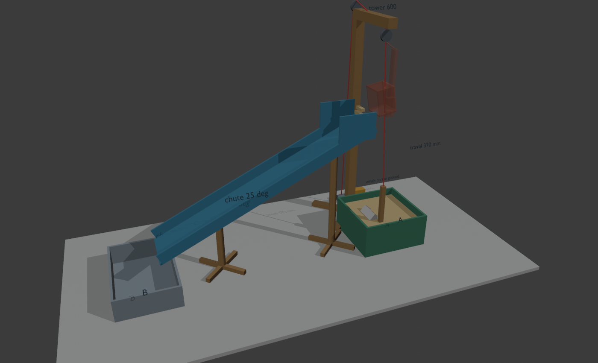
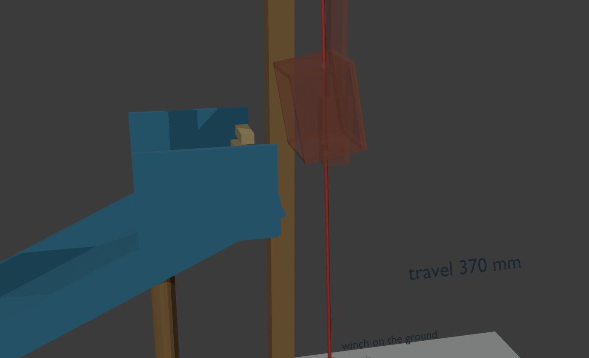

<title>Scoop Tower Build</title>
<meta name="claude:viewport-fit-sides" content="cover">
<link rel="stylesheet" href="https://fonts.googleapis.com/css2?family=Archivo+Narrow:wght@500;700&family=IBM+Plex+Sans:wght@400;600&family=IBM+Plex+Mono:wght@400;600&display=swap">
<style>
/* Layout: workshop manual — one column, build tracks, drawings at real proportions in mm */
:root{
 --bg:#f3f4f1;--paper:#ffffff;--fg:#1c2421;--muted:#5d6a65;--line:#cfd6d2;
 --kline:#2c6e9b;--wood:#9a6a32;--sand:#c99a3c;--servo:#d9822b;--a:#2f6b4f;--b:#6b7d8c;--string:#c0392b;
 --display:"Archivo Narrow","Arial Narrow",sans-serif;--body:"IBM Plex Sans",system-ui,sans-serif;--mono:"IBM Plex Mono",ui-monospace,monospace;
}
@media (prefers-color-scheme:dark){:root:not([data-theme="light"]){
 --bg:#141a18;--paper:#1c2421;--fg:#e6ebe8;--muted:#9aa8a2;--line:#33403b;
 --kline:#5aa3d6;--wood:#c8955a;--sand:#e0b65c;--servo:#f0a050;--a:#5fb08a;--b:#98aab9;--string:#ef6a5a;color-scheme:dark}}
:root[data-theme="dark"]{
 --bg:#141a18;--paper:#1c2421;--fg:#e6ebe8;--muted:#9aa8a2;--line:#33403b;
 --kline:#5aa3d6;--wood:#c8955a;--sand:#e0b65c;--servo:#f0a050;--a:#5fb08a;--b:#98aab9;--string:#ef6a5a;color-scheme:dark}
body{background:var(--bg);color:var(--fg);font:15px/1.55 var(--body);
 padding-left:max(16px,env(safe-area-inset-left,0px));padding-right:max(16px,env(safe-area-inset-right,0px));padding-block:24px 64px}
main{max-width:860px;margin:0 auto;display:grid;gap:36px}
h1,h2,h3{font-family:var(--display);text-wrap:balance;margin:0;line-height:1.15}
h1{font-size:2.4rem;letter-spacing:-.01em}
h2{font-size:1.6rem;border-bottom:2px solid var(--fg);padding-bottom:6px}
h3{font-size:1.15rem}
p{margin:0;max-width:68ch}
.lede{color:var(--muted);font-size:1.05rem}
section{display:grid;gap:16px}
.mono,code{font-family:var(--mono);font-size:.9em}
figure{margin:0;background:var(--paper);border:1px solid var(--line);border-radius:6px;padding:12px;display:grid;gap:8px;min-width:0}
figcaption{color:var(--muted);font-size:.85rem}
.scroll{overflow-x:auto}
svg text{font-family:var(--mono);fill:var(--fg)}
.photos{display:grid;grid-template-columns:repeat(auto-fit,minmax(min(100%,300px),1fr));gap:12px}
.photos img{border-radius:4px;display:block}
table{border-collapse:collapse;width:100%;font-size:.92rem;font-variant-numeric:tabular-nums}
th,td{text-align:left;padding:7px 10px;border-bottom:1px solid var(--line);vertical-align:top}
th{font-family:var(--display);font-size:.8rem;letter-spacing:.06em;text-transform:uppercase;color:var(--muted)}
td.n{text-align:right;white-space:nowrap}
tr.total td{font-weight:600;border-top:2px solid var(--fg)}
.have td{color:var(--muted)}
.tracks{display:grid;grid-template-columns:repeat(auto-fit,minmax(min(100%,380px),1fr));gap:16px}
.track{background:var(--paper);border:1px solid var(--line);border-radius:6px;padding:16px;display:grid;gap:10px;align-content:start;min-width:0}
.track h3{display:flex;gap:10px;align-items:baseline}
.tag{font-family:var(--mono);font-size:.75rem;padding:2px 7px;border-radius:3px;color:var(--paper);background:var(--fg)}
.t-chute .tag{background:var(--kline)}.t-tower .tag{background:var(--wood)}.t-scoop .tag{background:var(--servo)}.t-elec .tag{background:var(--a)}
ol{margin:0;padding-left:22px;display:grid;gap:6px}
li{max-width:66ch}
.warn{border-left:4px solid var(--servo);padding:8px 12px;background:var(--paper);border-radius:0 4px 4px 0}
.cycle{display:grid;grid-template-columns:repeat(auto-fit,minmax(150px,1fr));gap:10px}
.cycle div{background:var(--paper);border:1px solid var(--line);border-radius:6px;padding:10px 12px;font-size:.9rem}
.cycle b{display:block;font-family:var(--display);font-size:1rem}
</style>

<main>
<header style="display:grid;gap:8px">
 <p class="mono" style="color:var(--muted)">O(1/n) · SciTeCh '26 · Team Design · A → B</p>
 <h1>Torre com scoop pendurado: guia de construção</h1>
 <p class="lede">Um motor no chão enrola um fio que sobe a torre, passa em 2 roldanas e desce até um servo pendurado sobre A. O servo roda um copo pela areia como uma mão, o motor sobe-o, e o servo vira-o para a esquerda, para dentro da boca da calha que leva a areia até B. Só 1 motor e 1 servo, os do kit.</p>
</header>

<section>
 <h2>Como fica</h2>
 <div class="photos">
  <figure><figcaption>Opaco: o scoop a cavar em A. Transparente: em cima, a despejar na boca da calha.</figcaption></figure>
  <figure><figcaption>A boca da calha passa à frente da torre e acaba 47 mm à esquerda do fio.</figcaption></figure>
 </div>
 <figure class="scroll">
  <svg viewBox="60 -660 1000 740" width="100%" style="min-width:620px" role="img" aria-label="Vista lateral com medidas em milímetros">
   <line x1="80" y1="0" x2="1040" y2="0" stroke="var(--muted)" stroke-width="3"/>
   <polyline points="120,-60 120,0 280,0 280,-60" fill="none" stroke="var(--b)" stroke-width="5"/>
   <text x="170" y="40" font-size="20">B</text>
   <rect x="786" y="-74" width="178" height="68" fill="var(--sand)" opacity=".55"/>
   <polyline points="780,-95 780,0 970,0 970,-95" fill="none" stroke="var(--a)" stroke-width="5"/>
   <text x="900" y="40" font-size="20">A</text>
   <!-- chute -->
   <line x1="240" y1="-90" x2="803" y2="-353" stroke="var(--kline)" stroke-width="7"/>
   <polyline points="703,-376 703,-306 803,-306 803,-388" fill="none" stroke="var(--kline)" stroke-width="3" stroke-dasharray="6 5"/>
   <text x="600" y="-400" font-size="18" fill="var(--kline)">boca da calha</text>
   <text x="345" y="-100" font-size="20">25°</text>
   <text x="160" y="-100" font-size="18">90</text>
   <text x="640" y="-330" font-size="18">353</text>
   <line x1="400" y1="0" x2="400" y2="-165" stroke="var(--wood)" stroke-width="9"/>
   <line x1="720" y1="0" x2="720" y2="-314" stroke="var(--wood)" stroke-width="9"/>
   <text x="410" y="-40" font-size="18">165</text><text x="680" y="-40" font-size="18">314</text>
   <!-- tower (behind A) -->
   <line x1="850" y1="0" x2="850" y2="-600" stroke="var(--wood)" stroke-width="10" opacity=".55"/>
   <line x1="836" y1="-612" x2="900" y2="-612" stroke="var(--wood)" stroke-width="8" opacity=".55"/>
   <text x="910" y="-600" font-size="18">torre 600</text>
   <text x="910" y="-578" font-size="15" fill="var(--muted)">(atrás de A)</text>
   <circle cx="850" cy="-580" r="13" fill="none" stroke="var(--fg)" stroke-width="3"/>
   <!-- string + hanger raised (ghost) and lowered -->
   <line x1="850" y1="-567" x2="850" y2="-190" stroke="var(--string)" stroke-width="2"/>
   <rect x="844" y="-556" width="12" height="120" fill="var(--wood)" opacity=".4"/>
   <rect x="815" y="-445" width="70" height="50" fill="none" stroke="var(--servo)" stroke-width="2" stroke-dasharray="5 4" transform="rotate(-100 850 -420)"/>
   <text x="900" y="-430" font-size="16" fill="var(--servo)">em cima: centro 420</text>
   <rect x="844" y="-186" width="12" height="120" fill="var(--wood)"/>
   <rect x="815" y="-75" width="70" height="50" fill="none" stroke="var(--fg)" stroke-width="3" transform="rotate(40 850 -50)"/>
   <text x="900" y="-140" font-size="16">em baixo: centro 50</text>
   <text x="900" y="-300" font-size="18">curso 370</text>
  </svg>
  <figcaption>Vista lateral, medidas em mm desde o chão da arena. A torre fica atrás de A e a calha passa à frente dela.</figcaption>
 </figure>
</section>

<section>
 <h2>Materiais</h2>
 <p>Só se compra o que falta. Os preços vêm do <span class="mono">store.json</span>, confirma na loja.</p>
 <div class="scroll"><table>
  <thead><tr><th>Item</th><th>Material</th><th>Qtd</th><th>Para quê</th><th class="n">Créditos</th></tr></thead>
  <tbody>
   <tr class="have"><td class="mono">160</td><td>Kit Eletrónica</td><td>já têm</td><td>Motor DC = guincho, servo = scoop, L298N, Arduino</td><td class="n">—</td></tr>
   <tr class="have"><td class="mono">121/122</td><td>Ripas de madeira</td><td>5 × 40 cm</td><td>Torre, braço, pendural, pernas da calha, pé da torre</td><td class="n">—</td></tr>
   <tr class="have"><td class="mono">129</td><td>K-line</td><td>já têm</td><td>Calha, boca, copo, bases das pernas</td><td class="n">—</td></tr>
   <tr class="have"><td class="mono">143</td><td>Roldanas</td><td>2</td><td>Topo da torre e ponta do braço</td><td class="n">—</td></tr>
   <tr class="have"><td class="mono">192</td><td>Fio (grosso, que não estique)</td><td>~1,5 m</td><td>Do tambor até ao scoop</td><td class="n">—</td></tr>
   <tr><td class="mono">157</td><td>Tubo de cola quente</td><td>1</td><td>Montagem toda (se ainda não têm)</td><td class="n">30</td></tr>
   <tr><td class="mono">161</td><td>Bateria 9V</td><td>2</td><td>Uma para o Arduino, outra para o motor</td><td class="n">40</td></tr>
   <tr><td class="mono">131</td><td>Porcas</td><td>1</td><td>Lastro por baixo do servo (ou qualquer coisa pesada)</td><td class="n">15</td></tr>
   <tr><td class="mono">179</td><td>Jumpers M-F</td><td>5</td><td>Extensão do cabo do servo, ~80 cm (se o kit não tiver)</td><td class="n">50</td></tr>
   <tr><td class="mono">128</td><td>Cavilha</td><td>1</td><td>Tambor do guincho (ou um bocado de ripa redonda)</td><td class="n">20</td></tr>
   <tr><td class="mono">185</td><td>Abraçadeiras</td><td>1</td><td>Prender o motor ao pé da torre</td><td class="n">10</td></tr>
   <tr class="total"><td></td><td>A comprar, no máximo</td><td></td><td></td><td class="n">165</td></tr>
  </tbody>
 </table></div>
 <p class="warn">Ferramentas: x-ato, régua, serrote pequeno para as ripas, pistola de cola quente, computador com USB.</p>
</section>

<section>
 <h2>Cortes</h2>
 <div class="photos">
 <figure class="scroll">
  <svg viewBox="0 0 420 300" width="100%" role="img" aria-label="Planificação do copo em K-line">
   <g fill="none" stroke="var(--servo)" stroke-width="2">
    <rect x="150" y="100" width="105" height="90"/>
    <rect x="150" y="25" width="105" height="75"/>
    <rect x="150" y="190" width="105" height="75"/>
    <rect x="75" y="107" width="75" height="75"/>
    <rect x="255" y="107" width="75" height="75"/>
   </g>
   <circle cx="202" cy="227" r="6" fill="var(--servo)"/>
   <text x="165" y="150" font-size="13">fundo 70×60</text>
   <text x="162" y="68" font-size="13">parede 70×50</text>
   <text x="152" y="215" font-size="12">parede 70×50</text>
   <text x="212" y="250" font-size="11" fill="var(--servo)">horn</text>
   <text x="80" y="148" font-size="12">topo</text><text x="80" y="163" font-size="12">50×50</text>
   <text x="262" y="148" font-size="12">topo</text><text x="262" y="163" font-size="12">50×50</text>
   <text x="10" y="290" font-size="12" fill="var(--muted)">K-line · paredes coladas por cima do fundo</text>
  </svg>
  <figcaption>Copo: 5 peças, aberto em cima. O horn do servo cola no <b>centro</b> de uma parede de 70 × 50.</figcaption>
 </figure>
 <div class="scroll"><table>
  <thead><tr><th>Peça</th><th>Material</th><th>Medida (mm)</th></tr></thead>
  <tbody>
   <tr><td>Torre</td><td>Ripa 400 + 200</td><td class="mono">600</td></tr>
   <tr><td>Braço</td><td>Ripa</td><td class="mono">190</td></tr>
   <tr><td>Pé da torre ×2 (em cruz)</td><td>Ripa</td><td class="mono">200</td></tr>
   <tr><td>Pendural do servo</td><td>Ripa</td><td class="mono">120</td></tr>
   <tr><td>Pernas da calha</td><td>Ripa</td><td class="mono">165 e 314</td></tr>
   <tr><td>Fundo da calha</td><td>K-line</td><td class="mono">620 × 120</td></tr>
   <tr><td>Abas da calha ×2</td><td>K-line</td><td class="mono">620 × 30</td></tr>
   <tr><td>Lados da boca ×2</td><td>K-line</td><td class="mono">100 × 70</td></tr>
   <tr><td>Fundo da boca</td><td>K-line</td><td class="mono">120 × 30</td></tr>
   <tr><td>Bases das pernas ×2</td><td>K-line</td><td class="mono">140 × 140</td></tr>
  </tbody>
 </table></div>
 </div>
</section>

<section>
 <h2>Montar: 3 frentes em paralelo</h2>
 <div class="tracks">
  <div class="track t-chute"><h3><span class="tag">1</span>Calha</h3>
   <ol>
    <li><b>Primeiro (5 min):</b> deita areia num retalho de K-line a 25°. Se não escorregar, inclina mais e avisa a frente 2: a torre fica mais alta.</li>
    <li>Cola as 2 abas de 30 mm ao fundo de 620 × 120 para fazer um U.</li>
    <li>Na ponta de cima, cola os 2 lados da boca (70 mm de altura) e um fundo baixo de 30 mm. O lado virado para o scoop fica quase aberto.</li>
    <li>Cola cada perna (165 e 314) a uma base de K-line de 140 × 140.</li>
    <li>Pernas a 400 e 720 mm da parede esquerda da arena. A saída fica 40 mm por dentro de B, e a ponta da boca fica <b>23 mm por cima da parede esquerda de A</b>.</li>
   </ol></div>
  <div class="track t-tower"><h3><span class="tag">2</span>Torre e guincho</h3>
   <ol>
    <li>Emenda 400 + 200 com um bocado de ripa colado ao lado: a torre fica com 600.</li>
    <li>Cola as 2 ripas de 200 em cruz por baixo: é o pé.</li>
    <li>No topo, cola o braço de 190 na horizontal, virado para a frente (por cima de A).</li>
    <li>Roldana 1 no topo da torre, atrás. Roldana 2 por baixo da ponta do braço, a 160 mm da torre.</li>
    <li>Motor DC no pé da torre, preso com abraçadeira. Cola a cavilha ao eixo: é o tambor.</li>
    <li>Torre <b>55 mm atrás da parede de trás de A</b>, com a roldana 2 por cima da linha a 70 mm da parede esquerda de A.</li>
    <li>Põe as baterias e o Arduino em cima do pé, atrás: fazem de contrapeso.</li>
   </ol></div>
  <div class="track t-scoop"><h3><span class="tag">3</span>Scoop e eletrónica</h3>
   <ol>
    <li>Corta as 5 peças do copo e cola-as.</li>
    <li>Liga o servo ao Arduino, abre o monitor e manda <span class="mono">s180</span>.</li>
    <li>Com o servo em 180, cola o horn no centro da parede de 70 × 50, com a <b>abertura do copo virada para a direita</b> (para longe da calha).</li>
    <li>Cola o pendural (ripa de 120) em cima do corpo do servo e as porcas por baixo.</li>
    <li>Ata o fio no topo do pendural. Passa-o pela roldana 2, pela roldana 1 e até ao tambor, e dá-lhe 2–3 voltas.</li>
    <li>Prende o cabo do servo ao fio com fita, de 10 em 10 cm, até ao Arduino.</li>
   </ol></div>
 </div>
</section>

<section>
 <h2>Ligações</h2>
 <div class="scroll"><table>
  <thead><tr><th>Arduino / fonte</th><th>Liga a</th><th>Nota</th></tr></thead>
  <tbody>
   <tr><td class="mono">D9</td><td>Servo, sinal (laranja)</td><td></td></tr>
   <tr><td class="mono">D5</td><td>L298N ENA</td><td>Tira o jumper do ENA</td></tr>
   <tr><td class="mono">D7 / D8</td><td>L298N IN1 / IN2</td><td>IN1 = sobe. Se descer, troca os 2 fios do motor</td></tr>
   <tr><td class="mono">D2</td><td>Botão START → GND</td><td>Sem botão: encosta um jumper de D2 ao GND</td></tr>
   <tr><td class="mono">5V do L298N</td><td>Servo V+ (vermelho)</td><td>Não ligues o servo ao 5V do Arduino</td></tr>
   <tr><td class="mono">GND</td><td>L298N, Arduino, servo, as 2 baterias</td><td><b>GND comum obrigatório</b></td></tr>
   <tr><td class="mono">Bateria 1</td><td>L298N 12V</td><td>Motor</td></tr>
   <tr><td class="mono">Bateria 2</td><td>Arduino Vin</td><td></td></tr>
   <tr><td class="mono">OUT1 / OUT2</td><td>Motor do guincho</td><td>Canal B não usado</td></tr>
  </tbody>
 </table></div>
</section>

<section>
 <h2>Um ciclo</h2>
 <div class="cycle">
  <div><b>LOWER · 2,5 s</b>O guincho desce. O copo está em descanso (abertura para a direita).</div>
  <div><b>DIG · 0,8 s</b>Motor parado. O servo roda 180° → 100°: o copo varre a areia e fica de boca para cima.</div>
  <div><b>RAISE · 2,8 s</b>O guincho sobe com a areia.</div>
  <div><b>SETTLE · 0,8 s</b>Espera que o scoop pare de balançar.</div>
  <div><b>DUMP · 1 s</b>O servo vai a 0°: o copo vira para a esquerda e despeja na boca.</div>
  <div><b>RETURN · 0,6 s</b>O copo volta ao descanso. Repete. ~9 s por ciclo.</div>
 </div>
 <p class="warn">Não há sensores: tudo é por tempo. <b>Antes de carregar START, o scoop tem de estar em cima.</b> Carregar outra vez em START para tudo.</p>
</section>

<section>
 <h2>Calibrar sem reprogramar</h2>
 <p>Liga o USB e corre <span class="mono">pio device monitor</span> (9600). Manda um comando por linha:</p>
 <div class="scroll"><table>
  <thead><tr><th>Comando</th><th>Faz</th></tr></thead>
  <tbody>
   <tr><td class="mono">s180 / s100 / s0</td><td>Põe o copo nesse ângulo (descanso / cheio / despejar)</td></tr>
   <tr><td class="mono">u / d</td><td>O guincho sobe / desce 200 ms</td></tr>
   <tr><td class="mono">g / x</td><td>Começa / para o ciclo</td></tr>
  </tbody>
 </table></div>
 <ol>
  <li>Põe o scoop em cima com <span class="mono">u</span>/<span class="mono">d</span>, logo acima da boca.</li>
  <li>Conta os <span class="mono">d</span> até o copo entrar na areia. Cada <span class="mono">d</span> são 200 ms, por isso o total é o <span class="mono">lowerMs</span>.</li>
  <li>Afina os ângulos com <span class="mono">s</span>: o 0 tem de despejar dentro da boca.</li>
  <li>Põe os valores em <span class="mono">CraneConfig</span> (<span class="mono">lib/Control/Control.h</span>) e volta a gravar.</li>
  <li>Corre 3 ciclos. Se o scoop acabar mais baixo do que começou, aumenta o <span class="mono">raiseMs</span>. Se bater na roldana, baixa-o.</li>
 </ol>
</section>

<section>
 <h2>Riscos a ver logo</h2>
 <ol>
  <li><b>O scoop roda sobre o fio</b> e o despejo deixa de cair na boca. Solução rápida: 2 paus de gelado na ponta do braço a fazer uma fenda larga por onde o pendural passa solto.</li>
  <li><b>O copo não roda dentro da areia</b>, porque o servo roda o corpo em vez do copo. Põe mais lastro ou desce menos (só ~3 cm dentro da areia).</li>
  <li><b>O fio escorrega no tambor</b>: mais voltas, ou ata a ponta ao tambor.</li>
 </ol>
</section>
</main>
